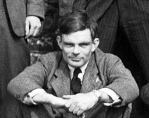
Born in London, England, on June 23rd, 1912, Alan Turing is considered one of the most influential figures in computer science and artificial intelligence. After World War II, where he cracked the Enigma code, he published several papers including "Computing Machinery and Intelligence" in 1950. In this paper, he proposed the Turing Test as a way of determining whether a machine could think. The test consists of a human judge interacting with a machine and a human through a computer terminal. It theorized that a machine is considered "intelligent" if the human judge cannot distinguish between the machine and the human. While he did continue work on artificial intelligence after the war, Turing committed suicide in 1954 at the age of 41.
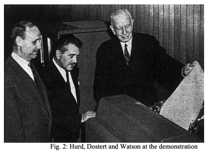
Known for its groundbreaking demonstration of machine translation, the Georgetown-IBM Experiment conducted in January 1954 aimed to translate 60 Russian sentences into English using a computer. The goal was to showcase the potential of computers to process and understand human language, proving that computers could perform human tasks. Using a rule-based approach based on linguistic knowledge and expert analysis of Russian and Englisn grammar, the experiment was considered successful, translating 60 Russian sentences with reasonable accuracy. This led to additional research in the field, and paved the way for future advancements in artificial intelligence.
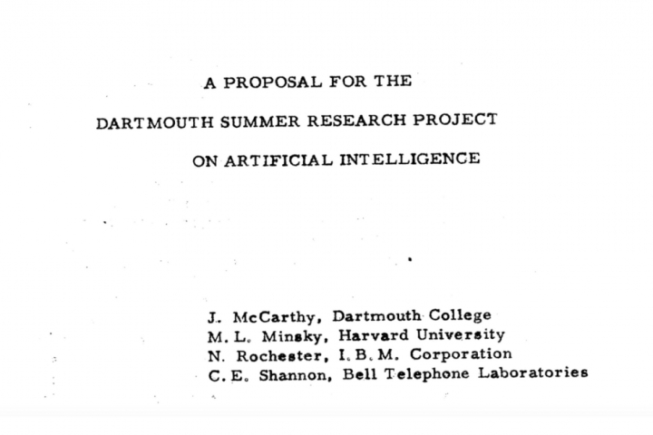
Taking place from July 31st to August 8th in 1956, the Dartmouth Summer Research Project is considered a pivotal moment in the history of artificial intelligence (AI). John McCarthy, Marvin Minsky, Nathaniel Rochester, and Claude Shannon came together with four primary goals of the conference:
-
Define the field of artificial intelligence
-
Explore the potential of creating intelligent machines
-
Develop a research program for AI
-
Discuss the challenges and opportunities of AI research
The project defined the field of artificial intelligence, established a research agenda, and inspired a new generation of researchers to pursue research in AI. While not achieving all of its original goals, it laid the groundwork for future research and development in the field.
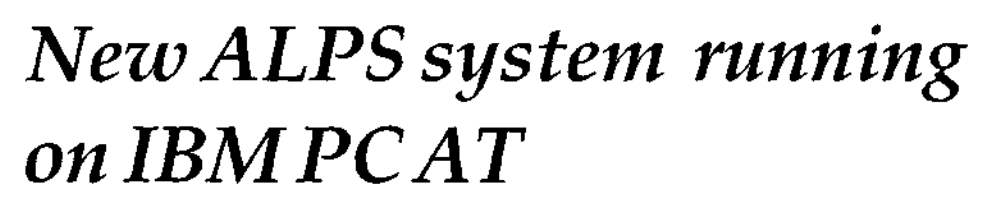
In the 1950s and 1960s, Early Machine Translation (MT) systems emerged with the intent of performing rule-based automatic language translation. Besides the Georgetown-IBM Experiment, IBM developed the Automatic Language Processing System (ALPS) and was one of the first large-scale machine translation systems. In addition, the Soviet system METEO (Machine Translation of English into Russian) was designed to translate meteorological texts. These early systems suffered multiple issues, including limited linguistic knowledge, computational limitations, ambiguity, and context. Despite this, it laid the foundation for future development in the field and informed modern MT research.
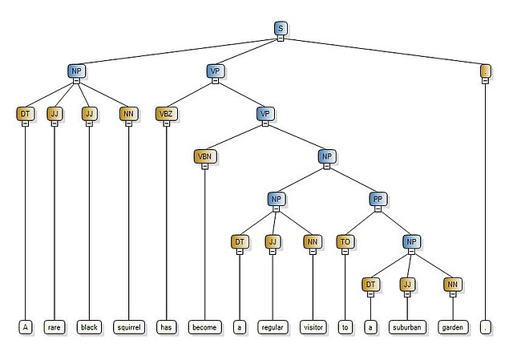
Appearing in the 1970s, syntactic parsers are tools designed to analyze the grammatical structure of sentences. Augmented Transition Networks (ATNs) and Generalized Phrase Structure Grammar (GPSG) are among the earliest examples of syntactic processors. These parsers were designed to solve several major challenges, many concerned tackling ambiguity in natural language, handling long-range dependencies, and interpreting contextual information. This led to significant advancements in syntactic parsing, improvements in dependency parsing, and introduces deep learning techniques. Syntactic parsers proved valuable for natural language understanding, machine translation, and question answering.
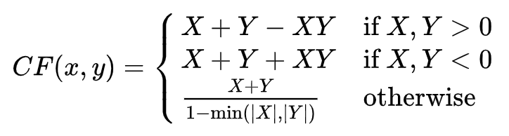
Expert systems are computer programs designed to simulate the decision-making abilities of human experts in a specific domain. MYCIN, developed at Stanford University, was designed to assist physicians in diagnosing infectious diseases and recommending appropriate antibiotic treatments. In addition, ELIZA was developed by MIT to simulate a psychotherapist and engage in conversations with users. These systems demonstrated the potential of computers to reason and solve problems in complex domains. While having limitations, these systems paved the way for future research and development in expert systems and natural language processing.
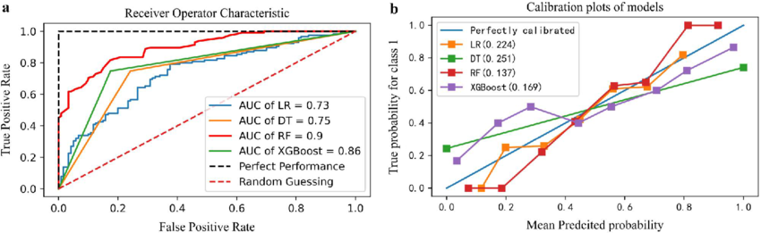
Statistical methods and machine learning played a pivotal role in the advancement of natural language processing (NLP). Some of the key statistical techniques of the time include N-gram models, Hidden Markov Models (HMMs), and Maximum Entropy Models. Several machine learning algorithms that emerged around this time include Naive Bayes, Support Vector Machines, Decision Trees, and Neural Networks. The benefits of these emerging techniques include improved accuracy, data-driven approach, and increased flexibility. These enabled the development of more accurate and robust models for tasks such as machine translation, sentiment analysis, and text classification.
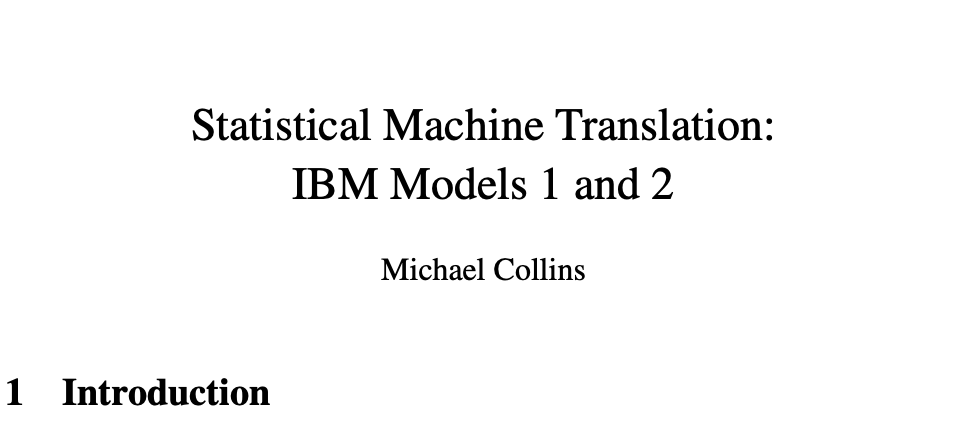
Introduced in the 1990s, IBM's SMT marked a significant breakthrough in the field of machine translation. SMT systems applies translation tables, language models, and alignment models to produce more accurate and fluent translations that earlier rule-based approaches. Here's how it works:
-
Word alignment: The system first aligns words or phrases in the source and target languages. This involves identifying corresponding pairs of words or phrases that are likely to be translations of each other.
-
Translation probability: The system then calculates the translation probability for each possible translation of a word or phrase. This is based on the translation table and the language models.
-
Decoding: The system decodes the translation by finding the most probable sequence of words in the target language that is consistent with the source language and the translation probabilities.
IBM's SMT system had a profound impact on the field of machine translation. Demonstrating the effectiveness of statistical techniques for language translation, SMT systems have been widely adopted in commercial application, such as online translation services and document translation.
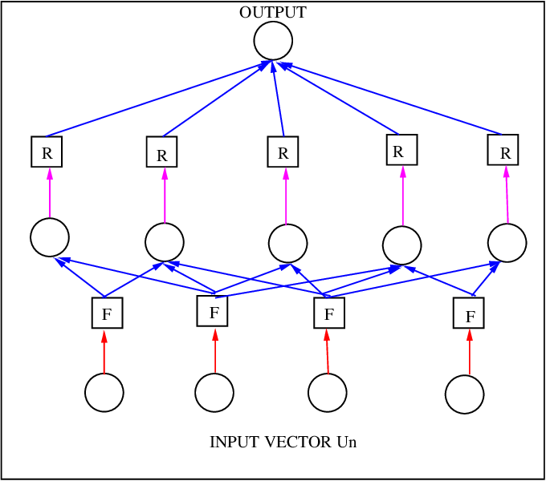
Playing a crucial role in the development of NLP, corpus linguistics and data-driven approaches analyze lange collections of text data, known as corpora, to extract patterns, trends, and insights about language usage. Here are some key concepts concerning Corpus Linguistics:
-
Corpus: A large collection of text data, typically representing a variety of genres, styles, and domains.
-
Concordance: A tool that allows users to search for specific words or phrases in a corpus and see them in context.
-
Collocation: A statistical association between words or phrases that frequently occur together.
-
Frequency distribution: A statistical analysis of the frequency of words or phrases in a corpus.
Data-driven approaches in NLP usually involves analyzing large corpora to develop models and algorithms such as statistical machine learning, neural networks, and information extraction. This led to improved accuracy, better language modeling, and enhanced information extraction.
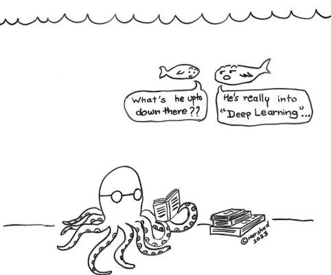
Deep learning is a subset of machine learning that revolutionized the field of NLP by enabling the development of highly accurate and sophisticated models. Neural networks are a core component of deep learning systems; it is a type of machine learning model inspired by the human brain. It introduced concepts such as neural network, artificial neuron, deep learning, recurrent neural networks (RNNs), Long Short-Term Memory (LSTM) networks, and Transformer models. Subsequently, several major applications were discovered:
-
Machine translation: Deep learning models produced more accurate and fluent translations due to state-of-the-art performance in machine translation
-
Sentiment analysis: Neural networks can classify text as positive, negative, or neutral, enabling social media monitoring and customer feedback analysis.
-
Question answering: Chatbots and virtual assistants emerged as deep learning models can be used to answer questions based on a given text corpus.
-
Text summarization: Neural networks can generate concise summaries of long documents, enabling applications for summarizing news and documents.
The impacts of deep learning and neural networks are far-reaching. The primary changes include significant improvements in accuracy, elimination of handcrafted features via end-to-end learning, and scaling of deep learning models to handle large datasets and complex tasks.
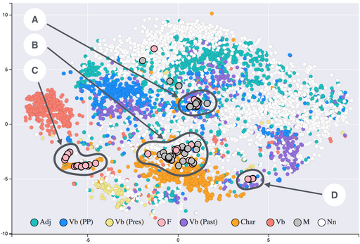
Word embeddings are a type of representation that maps words to dense vectors in a continuous space. These vectors capture the semantic relationships between words, allowing machines to understand the meaning of text and perform tasks such as machine translation, sentiment analysis, and question answering. In addition, word embeddings introduced concepts such as distributed representation, semantic similarity, and word analogy; this led to several popular word embedding techniques:
Word embeddings contributed to NLP research in three main ways. First, word embeddings significantly improved the performance of many NLP tasks, such as machine translation, sentiment analysis, and question answering. Second, word embeddings allow machines to understand the semantic relationships between words, enabling them to perform more sophisticated tasks. Third, pretrained word embeddings can be used as a starting point for training other NLP models, accelerating the learning process.
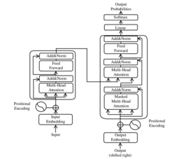
Introduced in the 2017 paper "Attention Is All You Need", transformer models are based on the attention mechanism, which allows the model to focus on different parts of the input sequence when processing information. Some of the key components of the transformer model is the encoder-decoder architecture, self-attention, and positional encoding. Surpassing previous models tackling machine translation, transformer models could also generate concise summaries of long documents and answer questions based on a given text corpus. Additionally, it can also generate human-quality text, such as poetry, code, scripts, musical pieces, email, letters, etc. The transformer model brought further positive enhancements in terms of accuracy, efficiency, and versatility.
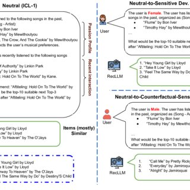
In recent years, Large Language Models (LLMs) have emerged as a powerful tool for NLP tasks. Some key characteristics include its massive scale, generative capabilities, multi-task learning, and contextual understanding. Some of the most well known LLMs are listed below.
- GPT-3 (OpenAI)
- LaMDA (Google AI)
- BERT (Google AI)
LLMs are capable of generating creative content, translating text between different languages, answering questions based on given text, and creating chatbots capable of natural language conversations. Despite the significant advancement, there are challenges and limitations associated with LLMs, with a focus on bias, misinformation, and computational resources. As of now, researchers are working on improving factual accuracy, addressing existing bias, and exploring ways to make LLMs more efficient and scalable.